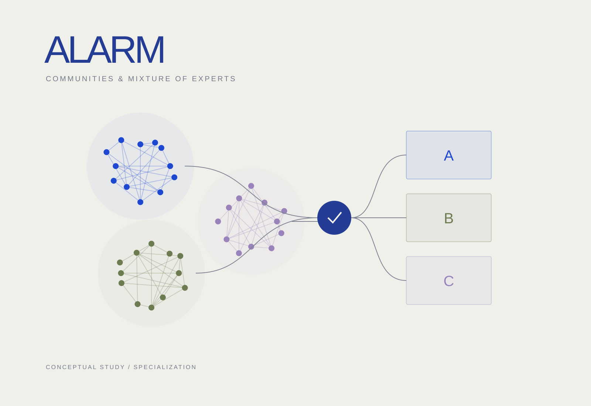

ALARM
Android malware detection with Leiden clustering and mixture-of-experts classification.

Problem
Changing Android malware distributions can weaken the assumptions of a single classifier. The research investigates whether API relationships and community structure can support more adaptive detection.
Approach
Combine Leiden-based community clustering with mixture-of-experts classification in an Android malware detection framework. This differs from SCAN’s Gaussian mixture clustering and adaptive-threshold approach.
Contribution
Extended API co-occurrence graph and community-based detection with a mixture-of-experts model, and published ALARM as first author at ACM SAC 2026.
Results
Published in the Proceedings of the 41st ACM/SIGAPP Symposium on Applied Computing, Thessaloniki, Greece.
Scope & limitations
Robustness depends on the datasets, drift conditions, and evaluation protocol. The paper provides the full experimental setup.